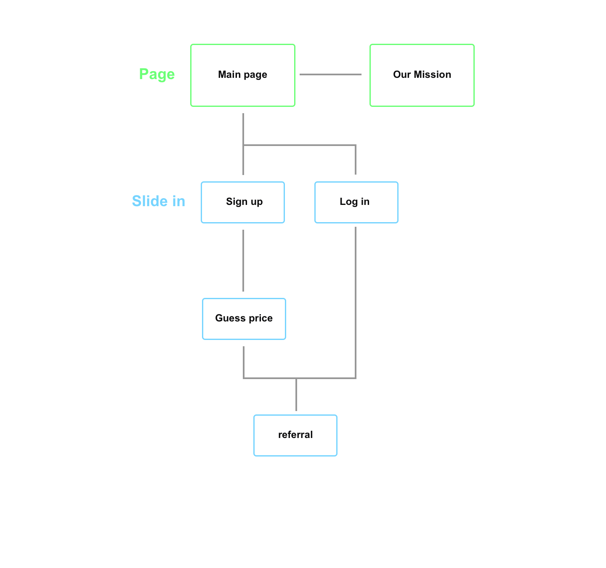

Ethos
May 2018 - Dec 2018
Starup Project
Summary
Brief: During the internship at WEKND Studio I participated the project. This was a prelaunch website for new products.
My role: Led the web design, UX design, UX research, UI design, visual design, mock up, prototype.
Project Overview
Before our product going on a campaign, we thought we need to have a prelaunch website to make gain more awareness from the public. We found the success of Harry’s referral program. Therefore, we felt that it might be an opportunity to acquire customers more efficiently by launching a referral program.
My goal was to make the referral program as easy as possible for our customers to refer and compel for those who were referred to sign up for our trial and also launch the project as soon as possible.
Competitive Analysis
I took a look around at others’ referral programs to help me create user flow, web map and design. I found that there were many different kinds of referral ways, I need to figure out which one is better for us.
Referral Program Decision
Our goal was to collect e-mails and increase reputation. Therefore, we chose two referral ways, one is “guess the price”, this allowed customers to get a chance to earn a free product, and we can also get their e-mails. The other one is a “milestone referral”, this needed customers to refer there Unicode to their friends to sign up the program, and customers had to refer more people to sign up in order to get more prizes.
Version 1
With the referral strategy I started to create the first version.
User Flow V1
Our website had only few main parts, Sign in/up, Referral Program and About Us. I tried to make it easy for users to sign up and refer. I created the version 1 user flow of the web and sign in/up process.
Webmap V1

Wireframe V1
I created the wireframe of the user flow v1. Then built a simple prototype for testing. We found some points when using the prototype.
1. Sign up should on the first page, since the main mission was collect e-mails.
2. It should be easier for signing up.
Version 2
Focus on the problems we found, I created version 2.
User Flow V2
I cut the pages of sign up/in and referral, and set sign up/in and referral as a slide in on the main page. In order to simplify the steps for customers signing up and referring other customers. We also add google sign up for customers signing up more simple.
Webmap V2
Wireframe V2
I created the wireframe of the user flow v2 and also did some visual design.
Interaction
I use Parallax Scrolling to let user look at the part of the brush as they want.
Next Step
The project is still in progress and I will complete this page after it finish.